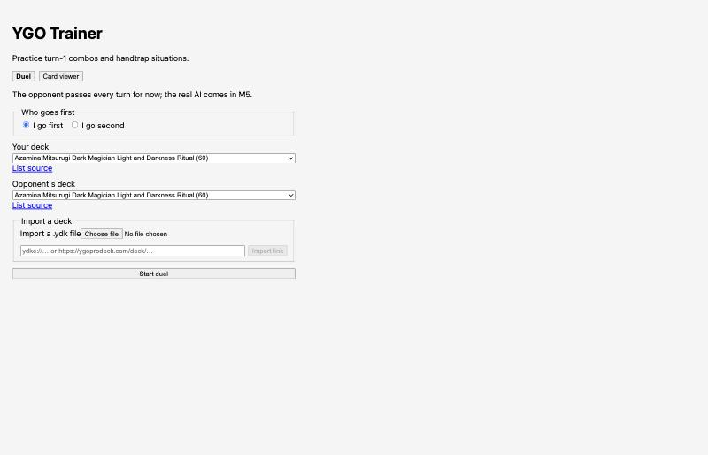
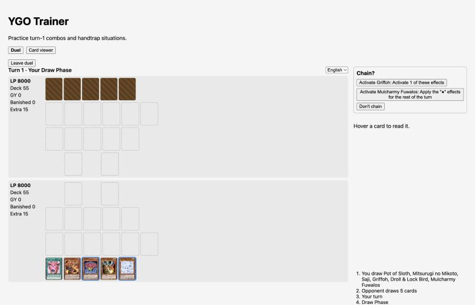

Findings on today's screens, three looks to choose from, and clickable
mockups of every screen. Written 9 Oct 2026 on branch
ux-revamp. Switch the look with the A / B / C buttons at
the top: every page follows.
1. Today's screens

Setup: browser default form, one narrow column.

Duel: turn 1, the game asks whether to chain.
2. What makes it feel bare
Look
Browser default fonts, buttons and selects: reads as a debug page.
Light grey on grey, no colour to tell your side from the AI's.
Title and tagline stay on screen during the duel and eat height.
Board
Cards are 50×66 px: art and ATK are hard to read; hand cards are
no larger than field cards.
Zones have no names; Deck, GY, Banished and Extra are text counts
in a side column, not piles on the field.
Life points and phase are small bold text; nothing shows the phase
sequence.
Prompts and feedback
The chain question sits in the side column, far from the cards,
with long button labels.
The card you can respond with does not light up in your hand.
The AI's moves show only as log lines at the bottom right, under a
fixed empty "Hover a card" box: you scroll to see what happened.
No chain-link marker on the cards in a chain.
Setup and card viewer
Deck pick is a native select with long names; no cover art, no
card counts.
Import shows a file input and a text box at all times.
Card viewer: a text list plus one 220 px picture; no filters, no
grid.
3. Ideas every look shares
Full-height duel screen: card text left, table centre, life
points + phase + coach + log right. No page scroll.
Real table: 7×5 grid with named zones, piles (Deck, Extra,
GY) drawn as stacks with counts, Extra Monster Zones in the middle
row.
Hand at the bottom, larger and fanned; a card rises on hover;
a click opens a small menu of its legal actions.
Prompt box above the hand with one line on what happened
("Chain 1 · AI activates Pot of Prosperity"); cards that can respond
glow; chain links get a number badge.
Card picks (SELECT_CARD and friends) as a row of real cards
in a dialog, not a list of buttons.
Duel end screen with the result, a short reason and "Rematch,
same hands".
Coach box next to the log: one short hint at the moment it
matters.
4. Three looks
A · Arena
Master Duel feel
Stone table tilted in 3D, gold trim, blue glow on your side
The looks mix well: for example C's flat table with A's colours and
corner life points. Times cover the duel screen; add about half a day
per look for setup + card viewer.